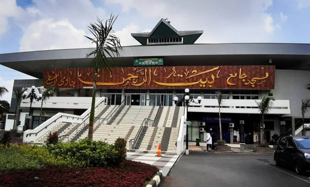

Masjid Kapal Semarang
Masji kapal semarang merupakan salah satu bangunan unik di Kota Semarang yang mungkin bisa dijadikan revenresi selama liburan di Kota Semarang,karena letak masjid ini yang tidak teralu jauh dengan pusat kota dan akses menuju ke masjid tersebut sudah bagus. bangunan ini saat pertama kali selesai dalam pembuatannya banyak sekali orang berdatangan ke sana untuk berwisata sekaligus dapat melaksanakan ibadah,untuk memasuki bangunan tersebut anda hanya mengeluarkan uang sebesar Rp.3000 saja. Sangat terjangkau bukanTentang Masjid Kapal
Alamat : Jalan. Kyai Padak, Podorejo, Kec. Ngaliyan, Kota Semarang, Jawa Tengah 50214 Luas Masjid : Luas masjid kapal yaitu sekitar 2500 meter dari total luas tanah sebesar 7 hektar Tiket Masuk : Rp 3.000/orang Buka : 04.00 - 20.00 (wib) Fungsi : Lantai pertama digunakan untuk ruang pertemuan,lantai 2 dan 3 digunakan sebagai tempat ibadah,lantai 4 digunakan sebagai atap dan tentu saja kita dapat melihat keindahan alam sekita dari atap Di Dirikan : 2018 Tentang : Masjid kapal ini selain memiliki 4 lantai,bangunan ini juga memiliki asrama perempuan yang berada di balik bangunan utama ini. Untuk jumlah pintu dan jendela pada bangunan ini memiliki 6 pintu raksasa serta 74 jendela yamg berbentuk lingkaran dan mereprenstasikan seolah-olah kapal sungguhan

Masjid Agung Semarang
Masjid agung semarang merupakan salah satu masjid terbesar selain masjid kapal,bangunan ini memiliki bentuk yang hampir sama dengan masjid nabawi yang dimana di depannya terdapat payung-payung yang dapat membuka ataupun menutup. Selain wisata ke masjidnya kita juga dapat menaiki tower masjid agung dengan mengeluarkan biaya Rp 10.000,di sana kita dapat melihat pemandangan sekitar masjid agung dan merasakan hembusan angin yang menyejukan pikiran kita. Untuk masuk ke kawasan masjid agung kita dikenai tari sebesar Rp 2000/jam.Tentang Masjid Agung Semarang
Alamat : Jalan. Gajah Raya, Sambirejo, Kec. Gayamsari, Kota Semarang, Jawa Tengah 50166 Luas Masjid : Luas keseluruhan sekitar 10 hektar Tiket Masuk : Rp 2.000/jam untuk parkir kendaraan di masjid, Rp.10.000 untuk memasuki tower asmaul husna yang ada di masjid agung semarang Buka : 04.00 - 21.00 (wib) untuk masjid,08.30 - 17.00 (wib) untuk tower asmaul husna Fungsi : Sebagai tempat ibadah serta juga dapat digunakan untuk manasik haji Di Dirikan : Didirkan pada 6 september 2002 dan selesai pada 14 November 2006 Tentang : Masjid agung ini memiliki kapasitas jamaah yang bisa mencapai 16.000 orang. untuk kubah nya sendiri memilki diameter sekitar 20 meter dan dikelilingi 4 menara masjid dan 1 menara terpisah. menara tersebut memiliki tinggi sekitar 62 meter dan 1 lagi memiliki tinggi sekitar 99 meter. Di dalam masjid juga terdapat Alquran besar berukuran 145 x 95 cm.
 Masjid Raya Baiturrahman Semarang
Masjid raya baiturahman semarang termasuk masjid yang memilki ukuran yang besar selain masjid kapal,masjid agung. masjid ini memiliki letak yang strategis yaitu dekat simpang lima. Keunikan masjid ini adalah tedapat nya tulisan arab yang sangat besar di bangunan utamanya,selain untuk ibadah di bangunan ini juga terdapat sekolah. masjid ini merupakan bangunan lama yang dahulu diresmikan oleh presiden soeharto pada 15 Desember 1974,yang dimana dahulunya sudah di rencanakan pembangunanya sejak 10 Agustus 1968.Tentang Masjid Raya Baiturrahman Semarang
Alamat : Jalan.Pandanaran No.126, Pekunden, Kec. Semarang Tengah, Kota Semarang, Jawa Tengah 50249 Luas Masjid : 11.765 meter Tiket Masuk : Rp 2.000/jam untuk parkir kendaraan buka : 04.00 - 21.00 (wib) Fungsi : Ibadah, Di Dirikan : Didirikan pertama kali pada 10 Agustus 1968 dan diresmikan oleh soeharto pada 15 Desember 1974 Tentang : Selain sebagai tempat ibadah,di belakang masjid ini juga terdapat sekolah. kemudian masjid ini juga sering mengadakan pengajian dan salah satu tempat yang digunakan pusat dakwah di Jawa Tengah